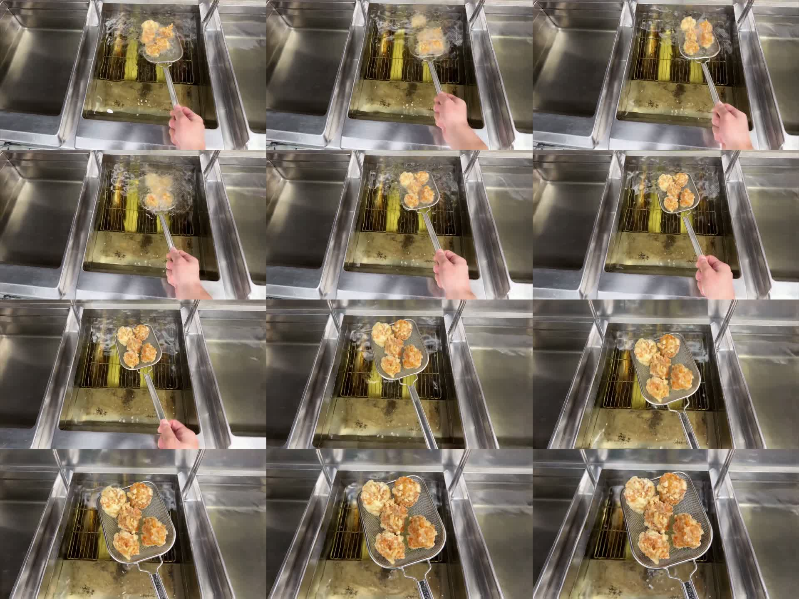

2026年10月10日制作 / Wan2GP 17.17・LTX-2.5カリッジュ PC用動画
左右のAI拡張結果
左右のAI拡張と実写中央の復元が完了しました。初回に出た余分な食品像は再生成で解消しています。左右の金属反射は実写より柔らかい描写なので、動画で仕上がりをご確認ください。
サイト本体のHTML・CSS・JavaScriptは変更していません。
Web用動画
1280×720・16:9・24fps・6.04秒。H.264 / yuv420p / faststart / 音声なし。容量 3.90MB。
左右を1024×576でAI生成し、1280×720へリサイズしました。中央は原本から直接405×720に縮小した実写を合成し直しています。Web圧縮前の全145フレームで、中央が縮小した実写と一致することをRGBチェックサムで確認しました。
使用した実写
「揚げ_3.mp4」の19.0〜25.04秒。原本の実測は720×1280・30fps・27.03秒です。元の画角と速度を残しています。元撮影にあるカメラの揺れも残ります。
初回AI拡張結果
実写の中央を復元する前の初回AI出力です。右側に不要な食品らしい像が出たため不採用とし、背景を限定する指示で再生成しました。商品の確認には上のWeb用動画を使ってください。
確認用の連続フレーム

0.5秒ごとのフレーム。動画を再生して継ぎ目や左右の動きも確認できます。
動作確認と再現用ファイル
RTX 3080 10GBで17フレームの試験と145フレームの生成を実行しました。6秒生成中のGPU全体の使用量は2秒間隔の計測で最大 3984MiBでした。この映像・この設定での確認結果です。
INT8 ConvRot・8 steps・1 phase・SDPA・profile 4・Default VAE・VG Raw Control Video・Spatial Outpainting。音声は生成後に除去。AIアップスケールは使用していません。